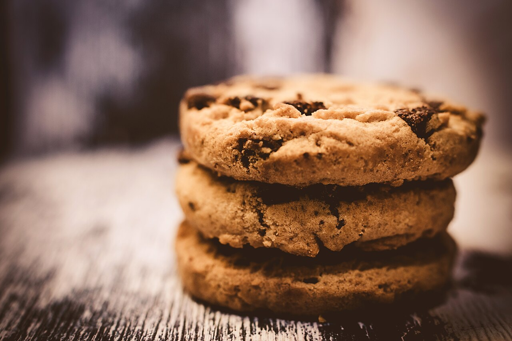
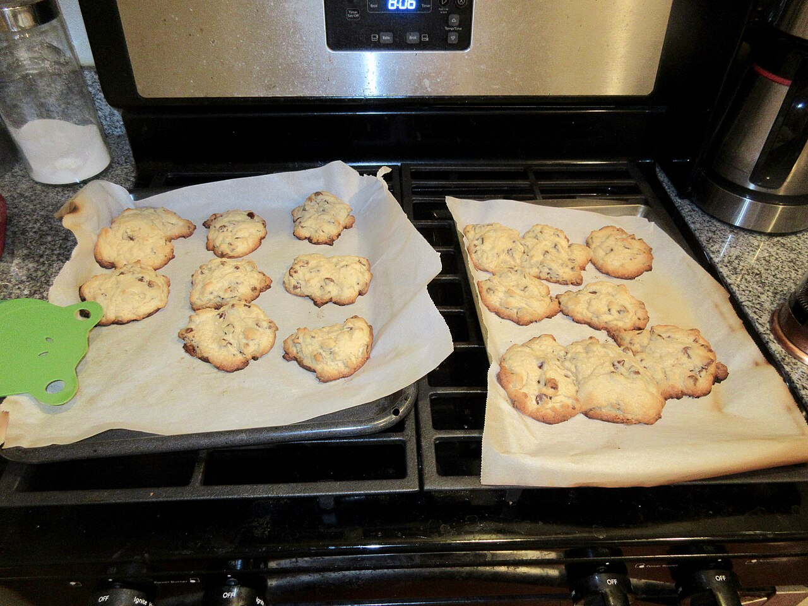

Storage
Keep baked cookies in an airtight container at room temperature for up to five days. Add a slice of bread to the tin if they start to crisp.
Issue 01 — The American Bakery

Recipe No. 01
Crisp at the edge, soft through the middle, and heavy with melted chocolate. The classic American cookie, written out step by step.
01
The Story
The chocolate chip cookie is barely a century old, and it arrived by mistake. In 1938 Ruth Wakefield ran the Toll House Inn in Whitman, Massachusetts, baking thin butter cookies for her guests. She chopped a bar of semisweet chocolate into the dough expecting it to melt into the batter. It did not.
The chocolate held its shape and softened into pockets instead. The cookie that came out of that oven became the most baked sweet in America, and the inn’s recipe — printed on the back of every Nestlé chocolate bar for decades — is still the template most bakers start from.
What makes the formula work is a small balance of chemistry. Brown sugar brings
moisture and a molasses note, so the centre stays chewy while the edges set firm.
Baking soda lifts the dough just enough to keep it from flattening, and a short
chill firms the butter so the cookies spread slowly instead of running across
the tray. Nothing here is difficult. The wait is part of the recipe
—
and it is the step most people skip.
02
Ingredients
Everything below is a supermarket staple. Weigh the flour if you can — a kitchen scale is the single biggest upgrade to a home baker’s accuracy.
03
Method
Read the whole method once before you begin. The oven should be at temperature before the first tray goes in, so preheat early.
5 min
Set a rack in the middle of the oven and preheat to 180 °C (350 °F). Line two baking sheets with parchment paper.
2 min
Whisk the flour, baking soda and salt together in a medium bowl until evenly combined.
3 min
Beat the softened butter with both sugars for a full three minutes, until pale and fluffy. Scrape down the bowl halfway through so nothing is left behind.
2 min
Beat in the eggs one at a time, mixing well after each addition, then stir in the vanilla extract.
2 min
Add the dry ingredients in two additions and mix on low speed only until the last streaks of flour disappear. Overmixing builds gluten and makes the cookies tough.
1 min
Stir the chocolate chips through with a wooden spoon or firm spatula, working from the bottom of the bowl so the chips distribute evenly.
30 min
Cover the bowl and refrigerate for thirty minutes. This firms the butter so the cookies hold their shape, and it lets the flour hydrate for a chewier crumb.
5 min
Portion the dough into balls of about two tablespoons and space them five centimetres apart on the prepared sheets.
10–12 min
Bake one sheet at a time for ten to twelve minutes, until the edges are golden but the centres still look slightly underdone. They finish on the tray.
10 min
Leave the cookies on the warm tray for five minutes, then transfer them to a wire rack. Sprinkle with flaky salt while they are still warm.
04
Notes
| Problem | Likely cause | The fix |
|---|---|---|
| Cookies spread too flat | Warm dough or stale baking soda | Chill thirty minutes; test the soda in vinegar |
| Dough feels dry and crumbly | Too much flour from cup measuring | Weigh the flour, or spoon and level it lightly |
| Tops stay pale | The oven runs cool | Use an oven thermometer and bake a minute longer |
| Bottoms burn | Dark trays or a low rack | Switch to light metal and move the rack to the middle |
Keep baked cookies in an airtight container at room temperature for up to five days. Add a slice of bread to the tin if they start to crisp.
Scoop the dough into balls and freeze on a tray, then bag them for up to three months. Bake from frozen, adding two minutes to the time.
Warm a cooled cookie for eight seconds in the microwave, or twenty seconds under a hot grill, and the chocolate turns molten again.
| Energy | Fat | Carbs | Sugar | Protein |
|---|---|---|---|---|
| 210 kcal | 11 g | 27 g | 16 g | 3 g |
05
Variations
Keep the base formula and swap one element at a time. Each of these has been tested against the same method above.
Nutty
Brown the butter until it smells of hazelnuts, cool it for twenty minutes, then continue from step three. Finish with flaky salt.
Dark
Replace a quarter cup of the flour with cocoa powder and use dark chocolate chunks. Reduce the bake by one minute.
Fruity
Hold back half the chocolate and add three-quarters of a cup each of toasted walnuts and dried cranberries.

06 — Words to bake by
“The only real stumbling block is fear of failure. In cooking you’ve got to have a what-the-hell attitude.”
“Cookies are made of butter and love.”
“The smell of chocolate chip cookies in the oven is the smell of a house that is being looked after.”

